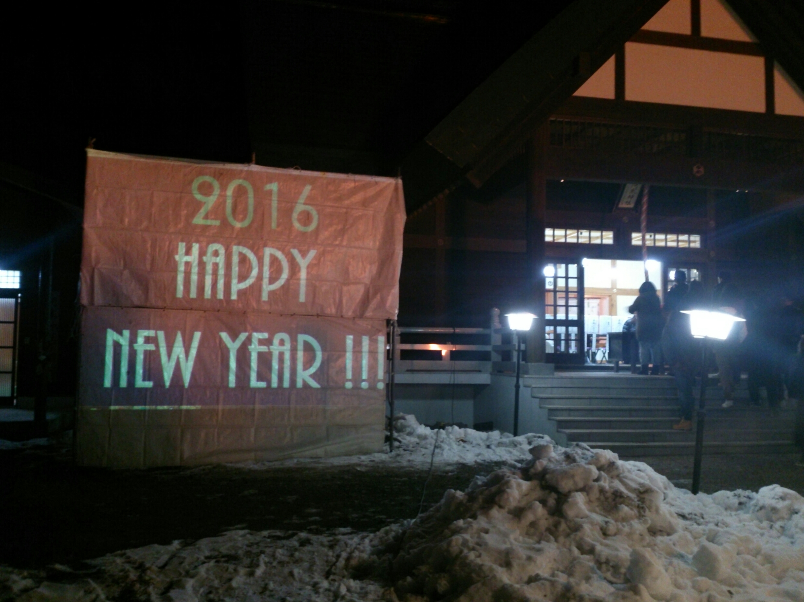

count down for 2016
Visual C#を使って作成した新年のカウントダウン
2014-2015年のカウントダウンから開始した地元の神社の初詣に向けてのお手伝い．
2015年へのカウントダウンはoffceのパワーポイントで作成し，手動でカウントダウンを行ったのですが，2016年へのカウントダウンは
せっかくだからなにかちょこっとコードを書いて自動でカウントダウンをさせよう！ と思いたち，手元にあったVisualStudio2013のC#でちょっとしたカウントダウンアプリを作成してみました．
今年はカウントダウン以外の機能やアニメーションを追加して，もっと面白いカウントダウンを町内の皆様にお届けできたらと思います！

2015年へのカウントダウンはoffceのパワーポイントで作成し，手動でカウントダウンを行ったのですが，2016年へのカウントダウンは
せっかくだからなにかちょこっとコードを書いて自動でカウントダウンをさせよう！ と思いたち，手元にあったVisualStudio2013のC#でちょっとしたカウントダウンアプリを作成してみました．
やったこと＆Point
- どんなものを作るか練る
- C#での時間取得，カウントダウンについて調べる
- カウントダウン用関数実装
- 文字表示用関数実装
- 文字位置，表示のタイミング調節
- 完成！
今年はカウントダウン以外の機能やアニメーションを追加して，もっと面白いカウントダウンを町内の皆様にお届けできたらと思います！